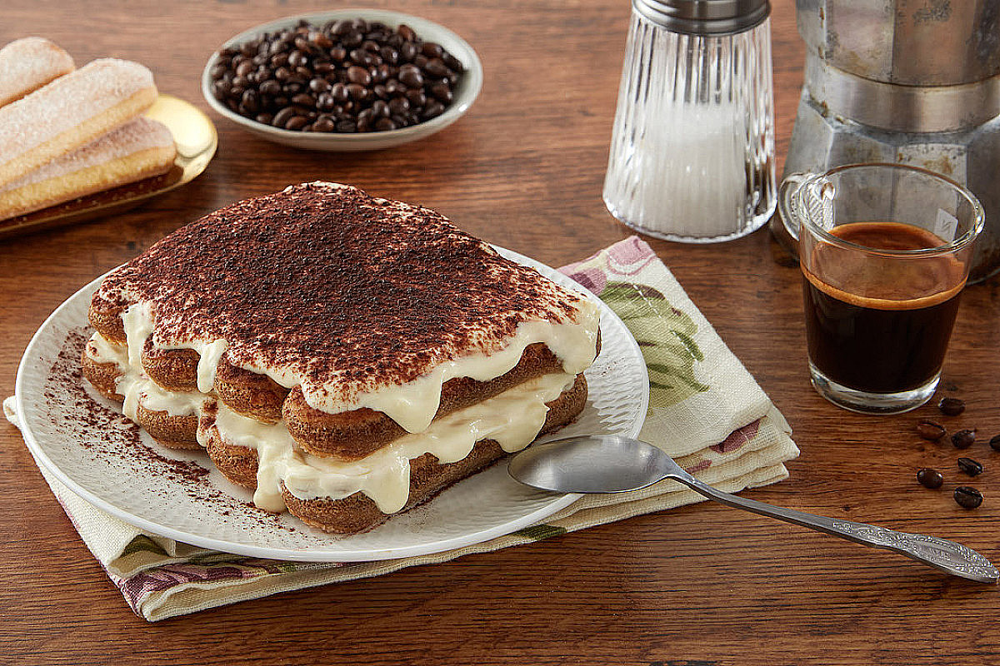

Tiramisù

Questa è la ricetta classica del tiramisù.
Se vuoi gustare un vero tiramisù italiano fatto in casa, segui alla lettera questa ricetta!
Ingredienti
4 uova medie
500 gr. Mascarpone Santa Lucia Galbani
4 cucchiai di zucchero
300g di biscotti tipo savoiardi
8 tazzine di caffè freddo
50 gr. di liquore a piacere
cacao amaro setacciato
sale q.b.